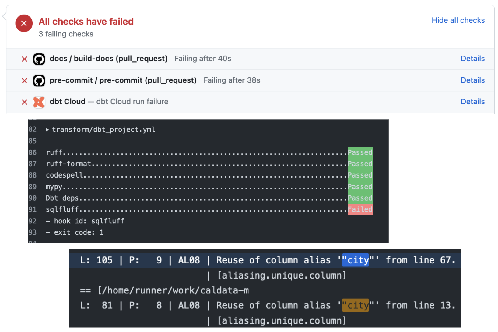

dbt (data build tool)¶
Part V: Environments, jobs, CI/CD, and custom schemas¶
Environments in Snowflake¶
During step 2 of the learning path we had you read a bit about Snowflake architecture. In that content, we briefly introduced the concept of environments. Broadly speaking, environments are a collection of compute resources, software, and configuration, which together represent a functioning context for development. Examples of environments include:
- A production environment which is used to run the dbt models that have been merged to
main. This can be run on an ad-hoc basis, or can be run on a schedule to ensure that models are never more than some amount of time old. - A development environment, which is used to run tests on branches and pull requests, and can help to catch bugs and regressions before they are deployed to production.
- A user acceptance testing (UAT) environment, which can be used as a final testing environment for verifying code before it is deployed to production.
These definitions are intentionally broad, since there are lots of different ways environments can be set up! Depending on your situation, different environments in Snowflake could be represented by:
- entirely different accounts
- different databases within the same account, or even
- different schemas within the same database.
In our default MDSA architecture we have two environments, dev and prod, which reside in the same Snowflake account. Each of these environments consists of a set of databases corresponding to our layered data architecture.
Environments in dbt Platform¶
dbt Platform also has a concept of an Environment, which is a virtual machine in dbt Platform that has all of the relevant software dependencies and environment variables set. Roughly speaking, an environment in dbt Platform will correspond to one of your environments in Snowflake.
If using dbt Platform, you’ve already encountered one environment, your Develop: Cloud IDE. But you can create other environments in dbt Platform for various purposes. Our typical dbt Platform setup includes the following environments:
- Development, which uses the "dev" Snowflake environment. This is what you use when you work in the cloud IDE.
- Production, which uses the "prod" Snowflake environment. This is what we use to build production data models.
- Continuous Integration, which uses the "dev" Snowflake environment. This is what runs the automated CI checks.
Jobs¶
A job is a command or series of commands that run in a given environment. Examples of jobs we often use include:
- Running a nightly build of data models
- Running Continuous Integration – CI checks (see below!)
- Building project docs
Jobs can be configured in a number of ways: they can have different environment variables set, they can run on a schedule, or they can be triggered by a specific action like a pull request being opened, or a branch being merged.
Continuous Integration and Continuous Deployment (CI/CD)¶
Continuous Integration (CI)¶
Continuous Integration checks in GitHub, Azure DevOps, BitBucket, or similar are automated tests that are run against your code every time you push a change. They are an important part of the software development process, and can help you:
- Catch errors and issues early: CI checks can identify issues with your code before they can cause problems in production.
- Improve code quality: CI checks can help you to improve the quality of your code by identifying issues like duplicate or dead code and potential security vulnerabilities.
- Establish a house style: CI checks can enforce various code formatting rules and conventions that your team has agreed upon.
We usually set up git repositories so that PRs cannot be merged to main unless these checks pass. This can sometimes feel annoying! However, CI checks shouldn’t feel too painful or like a box-checking exercise. They are intended to be a routine and helpful part of the development process.
When interpreting CI failures, you want to take an investigative approach. In GitHub, you can click on the "Details" for a failing check. Those details should tell you which check failed and the logs should contain any error messages.

Ultimately, experience has shown that effective use of CI greatly speeds up development.
Continuous Deployment (CD)¶
Continuous Deployment (CD) in most of our MDSA projects is usually simple. We typically do not build any applications or deploy cloud resources. Instead, whatever is in the main branch is considered production, and our dbt projects and docs are built using that.
Here is a 4 minute video that goes a bit deeper into the CI/CD process with accompanying visuals.
Custom schema names¶
Database schemas are the primary way of organizing database objects (e.g., tables and views). You can think of them like folders in your database. Different teams choose different schema structures for their data warehouses: they might be broken down by data source type, by line of business, or by phase of a data pipeline. In many CalData projects we choose schema names corresponding to data sources in the earlier phases of the pipeline, and schema names corresponding to lines of business in the later phases.
Note
Unfortunately, the word "schema" has two different meanings in data warehousing. One refers to the folder-like unit of organization, the other refers to the column names and data types of a given table or view. In this section we are only referring to the first definition.
Choosing a schema name for a model¶
dbt allows you to choose the schema that a model is built in using the model configuration. This configuration can be set in the same places as other config values, such as materialization.
We usually choose to configure the schema name per-folder in the dbt_project.yml:
# in the dbt_project.yml file...
models:
dse_analytics:
staging:
+schema: staging
intermediate:
+schema: intermediate
marts:
+schema: marts
The above builds all models in the staging directory in a schema called staging,
all models in the intermediate directory in a schema called intermediate,
and all models in the marts directory in a schema called marts.
It uses a 1:1 convention between folder name and schema name for clarity,
but we are free to choose other conventions if we want to.
If you need more granular control on schema name, you can configure it more specifically for individual models.
Development schema names¶
One of dbt's most useful features is the ability to provide safe development environments,
where individual analytics engineers can create new data models and change existing models
without stepping on each others' toes or breaking production models.
The name of your individual development schema is configured in your dbt profile.
By convention, this individual development schema is called DBT_YOURNAME.
When you build a dbt project, you will see your models under a schema with that name (e.g., DBT_JDOE).
But wait! How does your development schema name interact with the custom schema name configuration from the previous section?
By default
dbt prepends the active dbt profile name to the custom schema name.
For example, if your profile schema shows DBT_YOURNAME and the custom schema for a model is MARTS,
the model will be built in DBT_YOURNAME_MARTS.
Note
There is one situation where most CalData projects depart from dbt defaults:
in the production environment (indicated by a target name of prd in a dbt profile)
we do not prepend the profile schema name.
This behavior is configured using this macro.
The rationale for this is that schema names are often external-facing (in that they are seen
by analysts and BI users) and should be as simple and easy to understand as possible.
CI schema names¶
One typical job for CI tests is to run a dbt project and ensure that all models build successfully.
In the case of a failure, you should be able to go to your data warehouse and inspect the actual tables and views that were built.
In CI the dbt profile schema name is usually set to indicate where the schema came from.
For instance, when you use dbt Platform, the profile schema is set to DBT_CLOUD_PR_<PRNUM>,
where <PRNUM> is the number of the pull request in your version control platform.
Schema names for CI runs are prepended to custom schema names in the same way they are for individual developers.
Knowledge check¶
Question #1¶
Question #2¶
Question #3¶
Question #4¶
DBT_JDOE and a model has a custom schema configured to REPORTS, what is the final schema name when you build the model as a developer?DBT_YOURNAME. This is so that multiple people can develop alongside each other without building conflicting models: their individual work is isolated in different schemas.
Question #5¶
ANALYTICS and a model has a custom schema configured to REPORTS, what is the final schema name when this is built in CD?